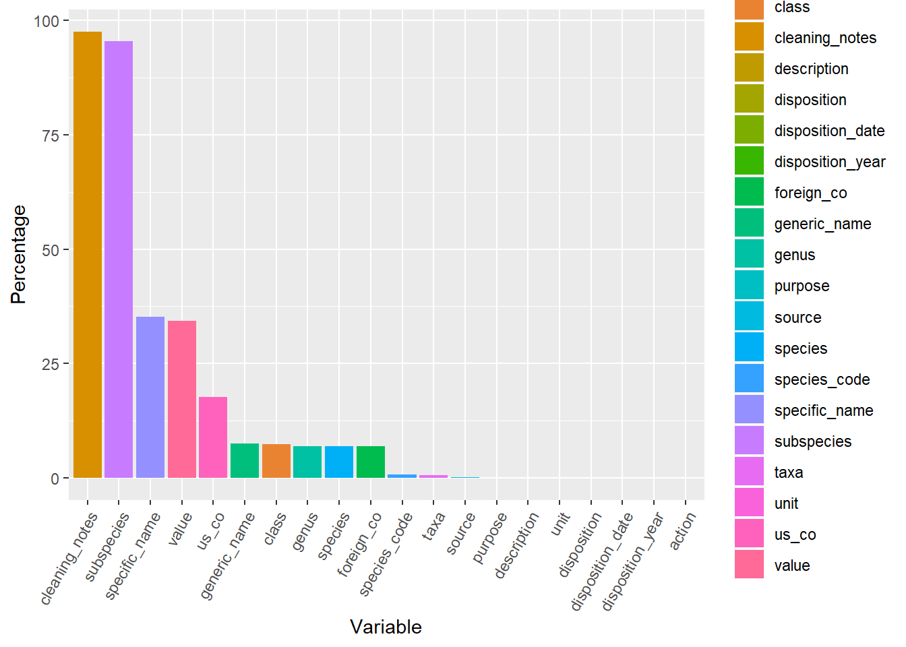

Chapter 3 Data
3.1 Missing values
Only four variables have more than 30% missing values. Most of them are below 10%
#Load Libraries: p_load can install, load, and update packages
pacman::p_load(rstudioapi,dplyr, ggplot2, lubridate, devtools, tidyr,magrittr,
lemis,zoo,gdata, knitr, DT, plotly)
# Set working directory
path <- getwd()
knitr::opts_knit$set(root.dir = normalizePath(path.expand(path),
winslash = ("/"),
mustWork = TRUE))
# Reading dataset
data<-readRDS("../data/data.rds")
# Transform some variables to factor/numeric/datetime
data %<>% mutate_at(c("control_number", "species_code", "taxa", "class", "genus",
"species", "subspecies", "specific_name", "generic_name",
"description", "country_origin", "country_imp_exp",
"purpose","source", "action", "disposition",
"disposition_year", "shipment_year", "import_export",
"port", "us_co", "foreign_co", "unit"), as.factor)
# Remove scientific notation
options(scipen=999)
rm(path)# Are there missing values?
missing_values <- data %>%
gather(key = "key", value = "val") %>%
mutate(is.missing = is.na(val)) %>%
group_by(key, is.missing) %>%
summarise(num.missing = n()/nrow(data) *100) %>%
filter(is.missing==T) %>%
select(-is.missing) %>%
arrange(desc(num.missing))
ggplot(missing_values, aes(x=reorder(key, -num.missing), y=num.missing, fill=key)) +
geom_bar(stat="identity") +
theme(axis.text.x = element_text(angle=60, hjust=1)) +
labs(y = "Percentage", x="Variable") +
rm(missing_values)